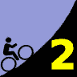
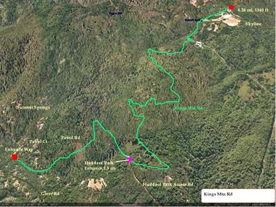

|  |
2007 Low-Key Hillclimbs Week 2: Kings Mountain 06 Oct 2007 |
|  |
| Aerial photo of Kings Mountain, courtesy of Stanford Cycling |
OLH or Kings?
Everyone has a preference. It's a subtle difference. Sure, Kings is higher, with 1540 vertical feet in contrast to OLH's 1290. But Kings is at a slightly lower grade, 6.8% to OLH's slightly steeper 7.3%. Each is relatively steady. Neither is exceptionally challenging.
But the numbers fail to tell the story. The difference is in feel, in personality, in vibe. Climbs have personalities. Attitudes. If you haven't yet met them, you've got to ride them yourself. In 2006, you had your chance with OLH. This year, it's Kings' turn. Check it out. Then you, too, will have a favorite.
OLH or Kings?
Our insurance demands it: helmets are required. Sorry kids, no exceptions!
We'll be reg/staging in the NE corner area of Alpine and Portola Roads
To mimimize congestion on Kings Mountain, we'll be sending you off in small 10-rider groups, separated by about 3 - 5 minutes At Greer Road, your start time will be recorded, and you're off!
| stats | 4.31 miles, 1540 ft, 6.8% |
| format | small groups |
| time | reg 9:15 - 10:00 start 10:10am |
| coordinator | |
| aerial view | Stanford Cycling |
| route profile | Lucas Pereira's profile |
| weather | Weather Underground Weather Bonk |
| registration form |
PDF release form |
| entry fee | $10 free for juniors 2 free for volunteers free for coordinators |

{kind=link}